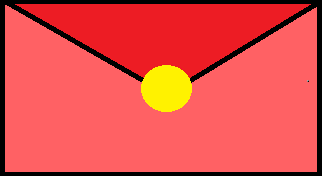

Dale clic al corazón tantas veces como sea necesario hasta encontrar el mensaje oculto

Hola Sarita, guenos días. Cómo andas?
Qué te puedo decir, solo estaba programando esto para practicar y cuando llegó el momento de definir el contenido de la carta pensé en un mensaje para tí, actualmente estás pasando por momentos emocionales complicados, quizá sientas que estás sola de alguna manera en todo eso, pero no lo estás
Eres una linda persona y tienes defectos como casi todo el mundo pero fuera e incluso dentro de esos defectos hay un diamante que es querido y atesorado por muchos por su brillo, incluído el banano, los días se vuelven difíciles, las dudas, el estrés y los miedos nublan también tu mente, pero incluso en los lugares más oscuros recuerda que estoy aquí para tí.
Un abracito para tí, no puedo decirte "nunca cambies", esa frase está sobrevalorada por las películas, hay varias cosas que debes mejorar y madurar por ti misma y por lo demás, pero incluso si fueras la persona más insoportable del mundo yo seguiría aquí y sé que muchos más también lo harían, deja de ser tan dura contigo misma y con las personas que están a tu al rededor, nadie juega contra tí, estamos en tu equipo y esperamos ver a Sarita hiperactiva más seguido que a Sarita estrés.
Eres una muchacha única e increíble, sé que no todo es color de rosa pero tu en cierta manera sí, y aunque su carácter no ayuda mucho, sigues brillando muy bonito, porque los arcoíris no salen sin lluvia.
Posdata, te quiero